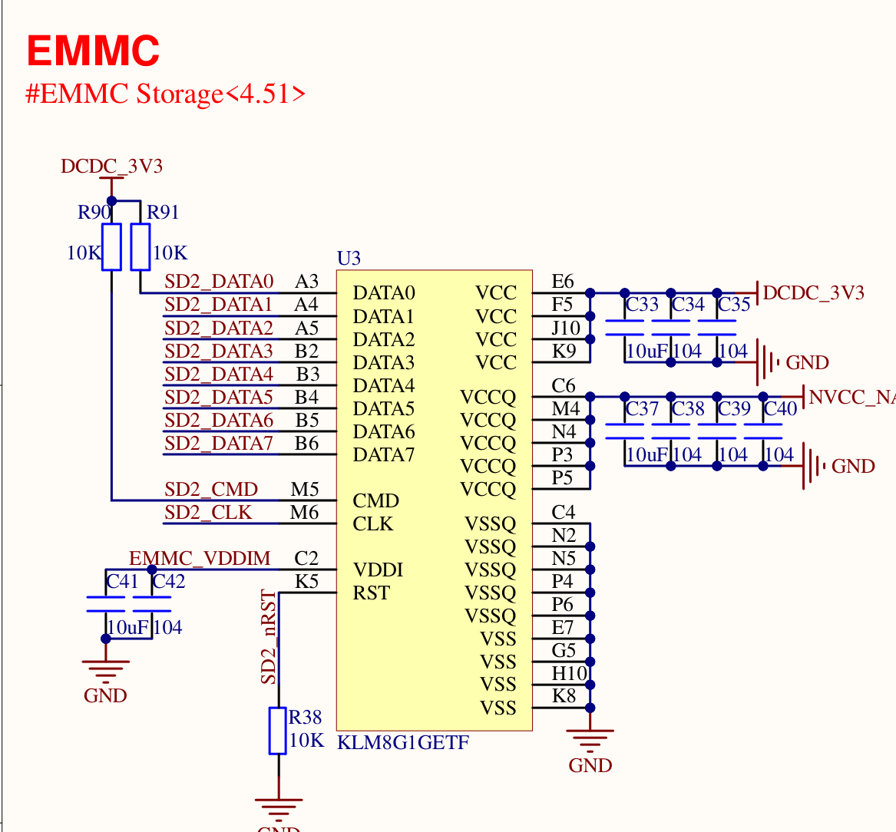
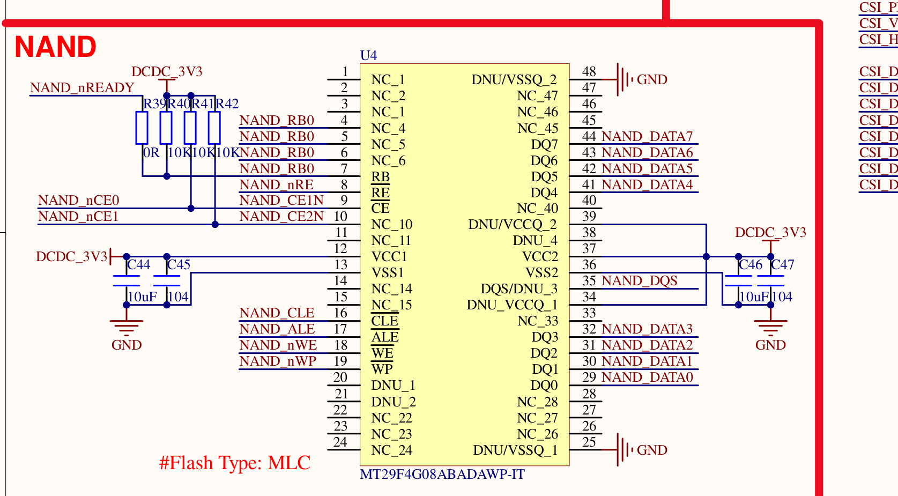

核心板第 4 页：eMMC 与 NAND，一套引脚二选一
这一页（IMX6ULL_CORE_FLASH.SchDoc）画了两颗存储芯片：左边 U3 KLM8G1GETF（8GB eMMC），左下 U4 MT29F4G08ABADAWP-IT（512MB NAND）。新手第一反应是「两颗都能用」——其实它们共享 SoC 的同一组引脚，只能贴一颗。这一章讲清「为什么共享、共享了怎么选、选完还要加哪些电阻」。

新窗口打开读完这一章，你应该能
- 指出 eMMC 与 NAND 分别占用 SoC 的哪组复用引脚，解释为什么不能同贴
- 说出 eMMC 的 CLK/CMD/DATA0–7/RST/VCC/VCCQ/VDDI 各是什么，VDDI 为什么只接电容
- 说出 NAND 的 CLE/ALE/CE/RE/WE/WP/RB/DQS 的时序含义
- 解释 10Ω 串联、10K 上拉分别解决什么问题，为什么 eMMC 数据线不串
- 按 BOOT 配置表判断「板子从哪颗芯片启动」
3.5.1为什么一套引脚能挂两种芯片
i.MX6ULL 的球是复用的。这一页上 SoC 侧标成 U1E，每根线的名字都写成「NAND_xxx / USDHCx_xxx / GPIOx_IOxx」的形式，例如：
NAND_DATA00/USDHC2_DATA0/QSPI_B_SS1/KPP_ROW01/EIM_AD08/GPIO4_IO02/ECSPI4_RDY
一根球七个功能，同一时刻只能选一个。eMMC 走 USDHC2（SD2_*），NAND 走 GPMI（NAND_*），二者抢同一批球。所以核心板的做法是：
- 两个封装都画上，BOM 里只贴一颗；
- 不贴的那颗，其外围电阻也标 DNP；
- 启动方式由 BOOT_CFG 决定，BOM 与 BOOT 配置必须一致，否则「贴了 eMMC 却按 NAND 启动」。
这就是为什么正点原子同一块核心板有「eMMC 版」和「NAND 版」两个 SKU，而原理图只有一份。
3.5.2eMMC：一颗芯片里装「控制器 + 闪存」
KLM8G1GETF 是三星 8GB eMMC（11.5×13mm BGA-153）。它不是一个裸闪存，内部自带控制器，对外只暴露 SD/MMC 协议接口：
| 引脚 | 本页网络 | 作用 |
|---|---|---|
| CLK | SD2_CLK | 时钟，由 SoC 输出，eMMC 5.1 可达 200MHz DDR |
| CMD | SD2_CMD | 命令/响应，双向单线，需要上拉 |
| DATA0–7 | SD2_DATA0–7 | 数据，8 位宽；HS400 时是 DDR |
| RST | SD2_nRST | 复位（低有效），由 SoC 的 USDHC1_RESET 控制 |
| VCC | DCDC_3V3 | 闪存阵列电源 3.3V |
| VCCQ | DCDC_3V3 | IO 电源 3.3V（也可 1.8V 做高速） |
| VDDI | EMMC_VDDIM | 内部稳压输出，只接电容 |
VDDI 是最容易焊错的一个脚：它是 eMMC 内部 LDO 的输出（约 1.2V），只允许外挂电容（C41 10µF + C42 104）。若有人以为「没电，给它接 3.3V」，等于把 3.3V 顶到内部 LDO 输出上，芯片立刻报废。这与 3.3 节 SoC 的 CAP 脚是同一条规则：名字里没有 IN 的电源脚，先怀疑它是输出。
3.5.3NAND：裸闪存，全靠时序线

新窗口打开NAND 区（300dpi 裁切）：U4 MT29F4G08ABADAWP-IT，DQ0–7、CLE/ALE/CE/RE/WE/WP/RB/DQS；R35/R36/R37 10R 串在 RE/WE/DQS 上；R38 10K 上拉 RB；另有 R39 0R 与 R40–R42 10K 用于 CE/WP 默认电平。左下 C43 104 在 NVCC_CSI 上。

新窗口打开NAND 没有控制器，SoC 必须自己「按手册的时序敲命令」：
- CLE（Command Latch Enable）：高电平时 DQ 上送的是命令；
- ALE（Address Latch Enable）：高电平时 DQ 上是地址；
- CE#：片选，多颗 NAND 时用它区分；
- RE#/WE#：读/写选通，数据在这两个沿上被采样；
- WP#：写保护，低有效；
- RB#（Ready/Busy）：开漏输出，擦写时拉低，必须上拉；
- DQS：数据选通（同步 NAND 才有），用于高速读时对齐。
把这七根线和 DQ0–7 拼起来，就是 NAND 的完整「命令周期 = CLE 高 + 地址周期 = ALE 高 + 数据周期 = 两者都低」。读原理图时看到 CLE/ALE 并排，就该想到「它们是把同一组 DQ 分成三种语义的开关」。
3.5.410Ω 串联与 10K 上拉：两种完全不同的作用
这一页上的电阻分两类，别看混：
| 电阻 | 位置 | 作用 | 取值理由 |
|---|---|---|---|
| R35/R36/R37 10R | 串在 NAND_nRE / NAND_nWE / NAND_DQS | 源端匹配，抑制过冲与振铃 | 10Ω + 走线 50Ω ≈ 驱动器输出阻抗，边沿变缓但仍够快 |
| R90/R91 10K | eMMC 的 CMD 等上拉到 3.3V | 开漏/双向线的默认电平 | 10K 与总线电容构成 τ≈ns 级，不影响 200MHz；太小会增加功耗 |
| R38 10K | NAND_RB 上拉 | RB 是开漏，必须有上拉才能读「忙」 | 10K 兼顾速度与功耗 |
| R39 0R | NAND_nREADY 跳线 | 可选短接/断开，用于兼容不同颗粒 | 0Ω 便于返工时割改 |
为什么 eMMC 的 DATA 线不串电阻？因为 eMMC 是 DDR 高速总线（HS400 时 200MHz 双沿，等效 400MT/s），串联电阻会把上升沿拉慢，压缩建立/保持窗口；这类总线靠 PCB 阻抗控制（50Ω）+ 末端端接（SoC 内部 ODT）解决，不靠串阻。NAND 的 RE/WE 速率低得多（几十 MHz），串 10Ω 更安全。
算一下 10Ω 串阻的代价：若走线等效负载电容 10pF，τ=(10+50)×10p=0.6ns，只让边沿多 0.6ns；而 NAND 的 RE 周期约 20ns，完全无影响。但若把它用到 eMMC 的 CLK 上，200MHz 周期 5ns，0.6ns 就是 12% 的窗口损失。
3.5.5启动路径：BOOT 配置与贴装必须一致
i.MX6ULL 复位时采样 BOOT_MODE0/1 与 BOOT_CFG，决定从哪里取第一条指令。核心板 p7 给出真值表：
| BMODE[1:0] | 启动方式 |
|---|---|
| 00 | Boot From Fuses（熔丝，量产用） |
| 01 | Serial Downloader（USB 下载，救砖用） |
| 10 | Internal Boot（按 BOOT_CFG 选 eMMC/NAND/SD） |
| 11 | Reserved |
所以调试时的标准动作：拨到 01（USB 下载）→ 用 imx_usb_loader 灌一个 uboot 到 DDR → 再从 uboot 里烧写 eMMC/NAND → 拨回 10 启动。若 BOM 贴的是 eMMC 而 BOOT_CFG 按 NAND 配，Internal Boot 会去读一个空封装，表现为「串口无输出」。
3.5.6故障判据
| 现象 | 先测 | 判据 | 结论 |
|---|---|---|---|
| eMMC 不识别 | VCC/VCCQ | 3.3V ±5% | 0V → 3.3V 未到；有电 → 查 CLK 是否有 200MHz/50MHz |
| eMMC 时好时坏 | CMD 上拉 R90/R91 | 10K ±5% | 上拉丢失 → 命令响应丢失（mmc0: error -110） |
| NAND 读 ID 全 0xFF | CE#/RE# 波形 | CE 低、RE 有脉冲 | 无脉冲 → 片选/读选通没接上；有脉冲仍 0xFF → DQ 虚焊 |
| NAND 写入失败 | RB# | 擦写时被拉低 | 一直高 → RB 上拉缺失或颗粒损坏 |
| 两颗都贴 | DQ 对地阻抗 | 约 0Ω 冲突 | 两个输出对打，必须拆一颗 |